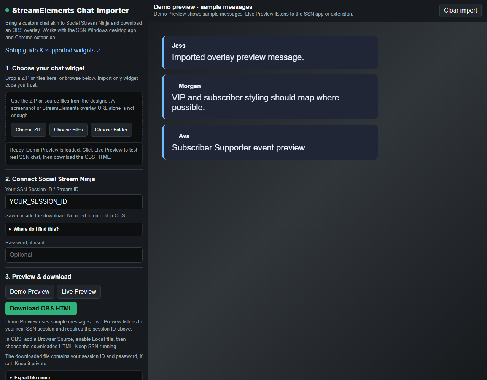

What works?
The importer is for custom chat widgets made for StreamElements or Streamlabs, including the chat component of a theme pack. You need the widget's source files. It does not import an entire StreamElements account or a theme from an overlay URL.
Use either the SSN Windows desktop app or Chrome extension to capture chat. The imported skin displays that chat in OBS. Compatibility depends on the widget; account features such as goals, loyalty, stores and alerts may need manual conversion.
1. Get the widget files
Start with the original ZIP or folder from the designer. Look for HTML, CSS and JavaScript, plus any fields/data JSON, images and fonts. Choose one chat widget when a pack includes several designs.
Only have an install link? Ask the designer for the chat widget source, or use the code available in your StreamElements custom widget editor. A screenshot, video or Browser Source URL cannot be converted on its own.
My widget code is in the StreamElements editor
Open the custom widget's code editor. Save each available part as a separate plain-text file: html.txt, css.txt, js.txt, fields.txt ja data.txt. Copy the contents without adding formatting or changing the JSON. If no data file is available, the importer uses the defaults in fields.
Choose all of these files together using Choose Files. Include any local artwork or fonts; Choose Folder preserves folder paths. See the StreamElements code editor reference for the code and field structure.
Import only code you trust: widget JavaScript runs in the preview and downloaded overlay.
2. Open the importer
In the SSN menu, below the section Pre-styled chat overlays, look for the option Import StreamElements / Streamlabs chat skin. This fills in your current session. You can also search the menu for StreamElements või open the importer directly.
Kasuta Choose ZIP, Choose Files või Choose Folder. A demo preview loads after the files are processed. Check any import warnings; use Advanced file selection if the wrong source files were detected.

3. Connect and preview
- Keep SSN running and confirm a real message appears in its chat dock.
- Check the importer's SSN Session ID / Stream ID. If empty, copy it from Session Options in SSN. This is not your Twitch or YouTube username.
- Enter the optional session password if you use one.
- Kasuta Demo Preview for sample messages, then Live Preview and send a new chat message to your stream.
- If Message history appears, adjust timed removal or the maximum number of messages.
Demo Preview works without a session and uses sample messages only. Live Preview needs chat arriving from SSN; an empty preview does not by itself mean the connection failed.
4. Download and add to OBS
- Klõpsake Download OBS HTML and save it somewhere permanent.
- In OBS, add a Brauseri allikas, enable Kohalik fail, and browse to that HTML file.
- Set the width and height for your chat area, then send another message to check it.
Your session is already embedded; no URL editing is needed in OBS. Use the downloaded file as the Browser Source. Keep SSN and your chat capture sources running; you can close the importer and StreamElements.
The exported file contains your session ID and optional password. Keep it private. To change the session, password or widget settings later, import the original files again and download a replacement, then refresh the OBS source.
If something does not work
- No widget code found: use the original source files. Images, fields/data alone and previously converted SSN files are not widget source.
- Demo is blank or looks wrong: check HTML/CSS/JS under Advanced file selection. Supply the matching fields and data files and all assets.
- Demo works, Live Preview is blank: send a new message, check the SSN dock, and match the session ID and password.
- Live works, OBS is blank: check the selected local HTML file, Browser Source dimensions and visibility, then refresh its cache.
- Missing fonts or artwork: inspect the export summary. Remote resources that could not be embedded still need an accessible URL and internet access.
- Messages vanish: adjust Message history if the widget exposes it. Some widgets control removal in their own JavaScript.
- Account APIs or plugins fail: some widgets need code changes. Use the importer's conversion prompt or ask for help with the original widget files and a screenshot of the problem, without sharing your session credentials.
Other options: built-in chat skins, custom CSS, või OBS-i tõrkeotsing.